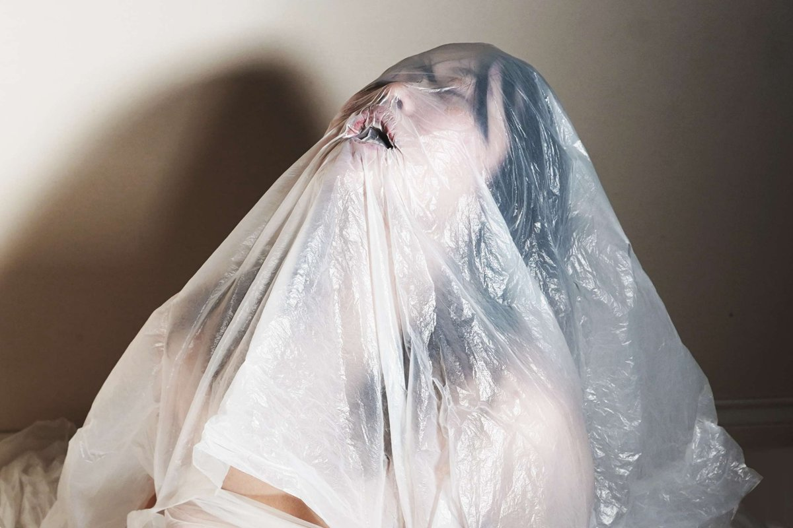
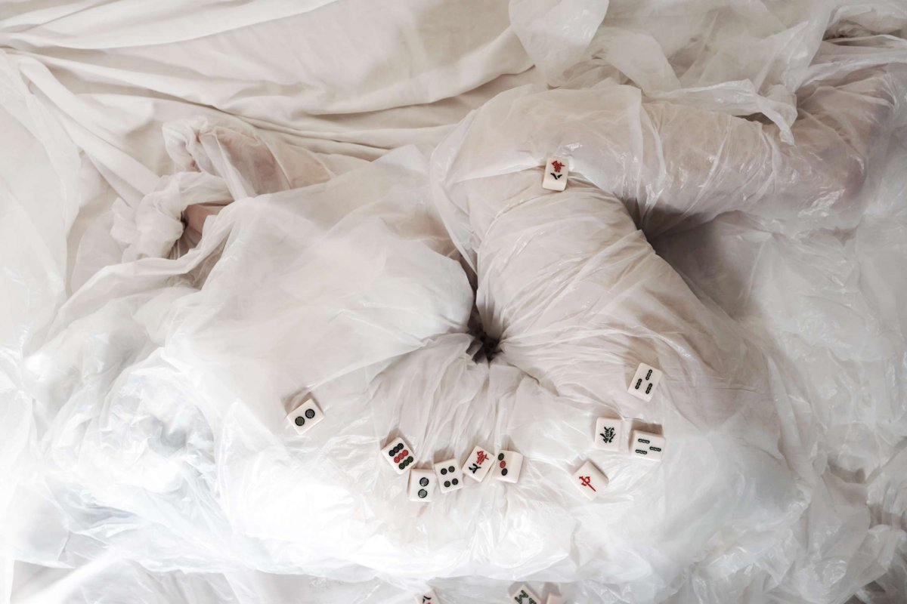
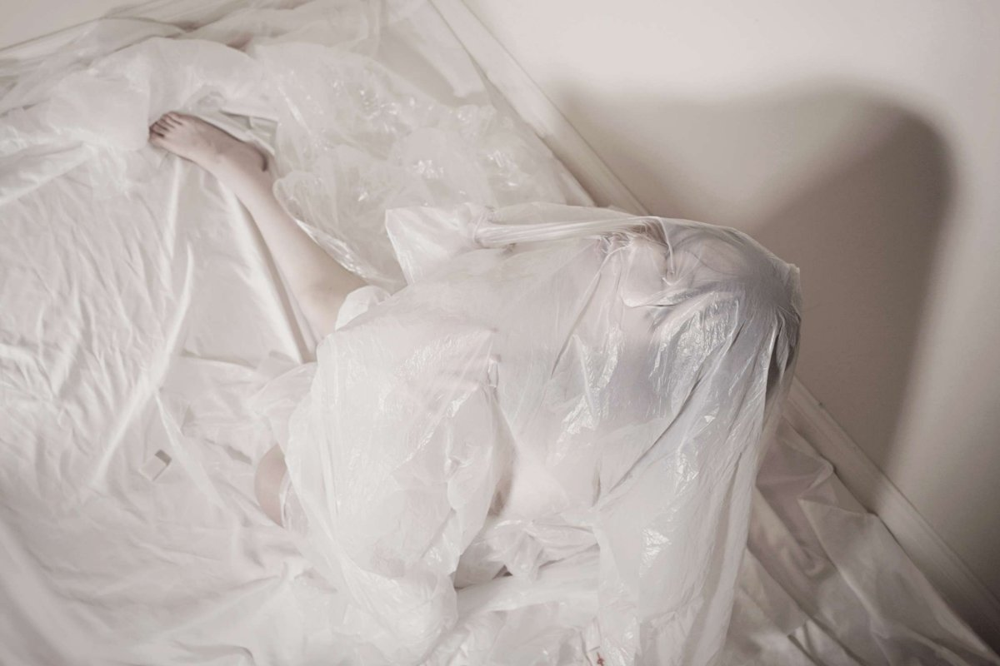

Light that moves. Objects that mourn.
Skies painted by strangers.



Xinrui Lyu is an installation and participatory artist completing a BFA at York University, Toronto. Their practice moves between intimate light installations, ecological sculpture, and community-based works — exploring how art can hold memory, loss, and collective identity.
Working across light, water, found materials, and direct community engagement, Lyu creates frameworks rather than finished objects — works that ask: what is remembered, what is lost, and what sky did you bring with you?